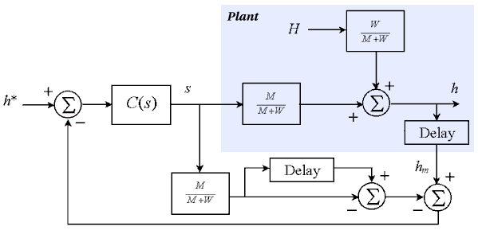

You are here : Control System Design - Index | Simulations | Rolling Mill | Part 2
Rolling Mill Tutorial - Part 2
Before continuing, make sure you have read Chapter 15.
Smith Predictor
Smith predictors can often be used to overcome the effects of time delay. The diagram below shows the Smith predictor described in Figure 11.16.

The controller again is

Java Applet Simulation
The JAVA applet below is a simulation of the above system. This time, the control parameters have been chosen as kp = 0.7 and ki = 7. As before, the graph has a vertical scale of 0.1mm per division and a horizontal scale of 2 seconds per division. It shows the set-point (the blue trace), the actual exit thickness h (the green trace) and the measured (delayed) exit thickness hm (the red trace).
Pressing the "Change Parameters" button allows you to change the same parameters as in the last simulation.
| Things to try | Things to notice |
| Change the set point to 0.3 | The delay has no effect on the set-point response due to the Smith Predictor |
| Change the input thickness to 0.5 | Watch the disturbance response and note that the time delay still affects the disturbance response |
| Increase the controller gain to try and increase the system's response speed | The system still goes unstable for a high enough gain, but it can handle higher gains than before. |
The Smith predictor definitely improves the set-point response, but does nothing for the disturbance response. This delay in the disturbance response is a problem because the disturbance affects the product (as much as two meters of steel could be deformed because of this). The Smith predictor also allows higher controller gains (and therefore faster responses) without the system going unstable, but the closed loop system is now more sensitive to modelling errors.
Next, we look at the use of a "virtual sensor" (or "soft sensor" or "observer") to measure the exit thickness with no delay.